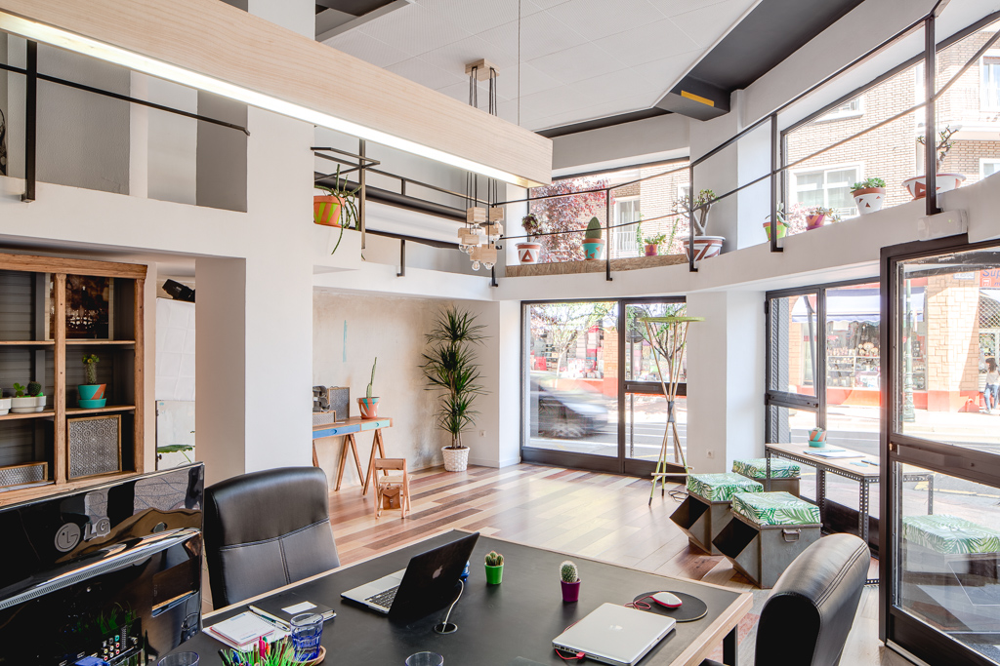

Nuestra Historia

Desde nuestra fundación en 2012, Camisetas Creativas ha trabajado con pasión para ofrecer productos personalizados de alta calidad. Empezamos como un pequeño taller con solo una máquina y muchas ideas. Gracias al compromiso con nuestros clientes y nuestra creatividad, hoy contamos con un equipo profesional y tecnología avanzada.
Hemos colaborado con escuelas, eventos deportivos, empresas locales y artistas independientes. Nuestra filosofía se basa en el diseño único, materiales sostenibles y un trato cercano y humano.